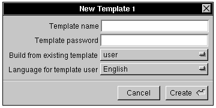

Release 3.3 Copyright ©1994 by NeXT Computer, Inc. All Rights Reserved.
| 5 | Managing User Accounts and User Groups | |
| When several people use a standalone computer, or a group of computers on a network, some mechanism is needed to control access to the data and hardware. To restrict access to computers and files, users are generally required to log in with a user account. | ||
| Another way to control access to files is with user groups. As the name implies, a user group is a set of users that can be given common access to files. |
| Managing User Accounts |
| Chapter 2, "Setting Up a NetInfo Network," describes how to add simple user accounts to your network. However, if you want to add a user with a special home directory, add accounts to specific user groups, modify an existing account, or delete an account, you need the procedures discussed in this section.
Planning User Accounts Before you begin adding new user accounts, it's a good idea to plan how those accounts will be configured. Some things to consider while you plan your user accounts follow.
Local or Network Accounts A local account is available only on a particular computer. A network account is available on several (or all) of the computers on the network. Decide if you want each user to be restricted to a single computer or if you want that user to be able to log into more than one computer on the network. Each user account should exist in only one NetInfo domain. For example, don't add a user account for tsmith to the root domain, then add another for tsmith in a local domain. With duplicate user accounts, the user might have a different password, different home directory, or different file ownerships, depending on which computer tsmith logged into.
User Names A user name is the name a user logs in with, and is frequently a shortened form of the user's full name. It should contain only ASCII letters (without diacritics), digits, and the underbar (_) character, and must be no more than 8 characters long. By convention, a user name has no uppercase letters and doesn't begin with a number. User names are used by people other than the account holder (for example, when addressing mail), so it's good to have a standard way to assign them--especially at sites with many users. One such strategy is to take the user's first initial followed by all or part of the last name. By this method, the user name for Martha Lang would be mlang. In smaller groups, more informal user names are fine. See Chapter 6: Managing Electronic Mail for more details.
User IDs A user ID is the number used by the system to identify each user account. UserManager automatically assigns the user ID to new accounts. File permissions and ownership are based on user ID rather than user name, so it's important that no two users have the same user ID. If two users do have the same user ID, they'll have file permission problems: Whatever the permissions on one user's files, the other user will be able to read, write, or erase them. On networked computers, user ID numbers should be unique throughout the entire NetInfo domain hierarchy. For example, if martha has user ID 125 in the root domain, then no other account in any domain should have user ID 125.
Home Directories
The home directory is where a user stores personal files. It's created by UserManager when you set up an account. If you're creating a network account, you need to make the user's home directory available on all the computers that user can log into. The home directory should be on a shared file system. Set up the home directory server before you attempt to add network accounts. See the Setting Up File Services section in Chapter 2: Setting Up a NetInfo Network.
User Groups A user group is a collection of users, set up so that its members can allow each other to read and write some (or all) of their files. All files and directories have a group associated with them. They also have permissions that apply to members of that group--permissions different from those that apply to users not in the group. A user can be a member of several groups, and can specify any one of them for each file (and directory). UserManager assigns a default group to each new user account. When the new user's home directory is created, it is associated with the default group. When a user creates a new file or directory, it has the same group as the parent directory. All of a user's files will have the default group. If you'll be creating your own user groups, you should create them before you add new user accounts, so you can assign new users to these groups. See "Managing User Groups," later in this chapter.
Passwords Each user account should have a password assigned to it. If an account doesn't have a password, anyone can log in using that account. A password should be more than six and no more than eight characters, be easy to remember and hard to guess. A combination of uppercase and lowercase letters that includes numbers and punctuation is recommended to make the password harder to guess. For security purposes you should assign a password at the time you create a new account.
Standard User Accounts Every NEXTSTEP computer comes with several user accounts already installed in the local domain. Here's a description of some of the standard accounts: |
| root (user ID 0)--Priviledged user, aka superuser. Can bypass file and directory permissions. Used for administrative tasks. | ||
| me (user ID 20)--Default account. Used on standalone computers. See the User's Guide for more information. | ||
| nobody (user ID | ||
| uucp (user ID 4)--Used in the administration of UUCP mail and file transfer. See Chapter 12, "Using UUCP," for more information. |
| All standard accounts have a user ID of 20 or less, as do the standard accounts on UNIX computers from other vendors. To avoid any possible conflicts, make sure that all the user accounts you create have a user ID of 100 or greater. Note that the operating system references the UID number, not the name. Also note that UserManager by default assigns the next available UID number to a new user account; use the default unless you have a specific purpose to do otherwise.
The root Account Every local domain has a root account (also called the superuser), which is able to bypass file permissions altogether. When you're logged in as root, you have far-reaching powers that let you perform a variety of administrative tasks. For example, root can change the ownership or permissions on any file or directory. (You can restrict root access for remote files. See Chapter 4, "Setting Up the Network File System.") Two ways to act as root are by logging in as root and by using the su command (see the next section). Note: Don't confuse NetInfo root accounts with NEXTSTEP filesystem root accounts. NetInfo domains other than local domains also have a root account, but you don't log into these accounts. Instead, the root account is used to control access to the domain. If you want to make changes to a domain, you must know the root password for that domain. The root password for a network domain is copied from the local domain when the network domain is created. Once created, the passwords for the two root accounts are changed independently. See "Examining the NetInfo Database," later in this chapter.
Using the su Command The su command (an abbreviation of "superuser") is a shell program that allows someone logged in as one user to gain access as another. It's most commonly used to gain root access. Using su often eliminates the need to log out and log back in as root. To gain root access, a user must be a member of the user group wheel. To act as root, perform the following steps: |
| 1. | Enter the following command into a terminal window: |
 su
su
| Without an argument, su assumes you want root access. If the root account has a password (and it should), you're prompted to enter it. |
| 2. | Enter the root password and press Return. | |
| Note: An alternative version of su is /bin/su.wheel. With this version of the program, users belonging to the wheel group can gain root access by using either the root password or their own. To use this version, just link using the ln command (or copy using the cp command) /bin/su.wheel to /bin/su. | ||
| 3. | Any commands you enter now are executed with root privileges. | |
| 4. | When you've finished your work as root, enter the following command: |
 exit
exit
| Any further commands are run normally, with the privileges of the original user. |
| Warning: | Acting as root is dangerous. When you act as root, you can delete essential files and important information without being warned. Try to avoid logging in as root; use the su command instead. And be careful when using su. Logging in as root is considered more dangerous since every aspect of your work with the system may have far-reaching consequences. | |
| Adding a User Account | ||
| To give a person access to a computer or network, you add a new user account. This section describes adding a user account with the long form of the New User Window in UserManager. |
| 1. | Log into the computer that will hold the new user's home directory. For a local account, this is just the local computer. For a network account, this is the home directory server. | |
| Note: UserManager must have permission to create the user's home directory as root. If you want to be able to add users from a computer other than the home directory server, you need to export the directory with root access for the hosts from which you want to add users. For example, if the home directory server is earth, and you want to add users while logged into mars, you need to log into earth and export the home directory with root access for mars. See Chapter 4 for details. | ||
| 2. | Start up UserManager, located in /NextAdmin. | |
| 3. | If you're not logged in as root, a panel tells you that you must have superuser status to run this application. Enter the password for root and click Login. Note that in version 3.3 the Username is selectable, whereas in previous NEXTSTEP releases the root username was not changeable. |
 |
| 4. | Choose User, New from the UserManager main menu. The Create User panel appears. |
 |
| 5. | Choose the type of user account. |
| a. | Click Local if you're adding a local user account. The New User window appears. | |
| b. | Click Network if you're adding a network-wide account. The Select NetInfo Domain panel appears. |
| c. | Click "/" (the root domain) in the first column of the domain browser, then click OK. (If you're adding users on a network with more than two NetInfo domain levels, choose the appropriate domain.) The New User window appears. |
| Note: Double-check the domain value. UserManager may present a domain other than that which you want, and it's easy to click OK prematurely. Be sure to select the domain you really want. |
 |
| Notice that the title bar of the New User window indicates the domain to which the new user will be added. |
| 6. | Select Long Form from the popup list to open the long form of the New User window. |
| This window contains all the fields in the short form as well as additional fields for the remaining information associated with a user account. Note that the User ID value is filled in, as UserManager by default presents the next available UID value. |
| 7. | Enter the appropriate values into the first three fields: User's Full Name, Username, and Password. | |
| 8. | Modify the contents of the last four fields as necessary. The Default Group field cannot be edited directly; you'll deal with user groups in the next step. | |
| User ID--Each user account must have a unique user ID number, the number the system uses to identify the user. UserManager has determined the next available number and assigned it to the account automatically. Don't change this value unless you need to. |
| Warning: | UserManager assigns the next available user ID for the current domain. When you save the account, UserManager only checks the current domain for conflicts. Be absolutely sure that the user ID assigned is unique throughout the network. | |
| Home Directory--In the long form, you must enter the home directory for a new account, rather than choose it from a pop-up list. Be sure to enter the complete pathname, ending in the new user name. For example, the network user pat might have the home directory /Net/earth/Users/pat (earth is the host name of the directory server, and Users is the name of the shared directory). | ||
| Login Shell--The program specified in this field is started when the user opens a shell window. It's also run when the user logs in remotely through a shell window. You shouldn't need to change this value. If you do specify a different shell for a user, the program must be listed in the file /etc/shells. | ||
| Language--This field sets the default language for the user. If you need to change it, select a new value from the pop-up list. | ||
| Change the default group for this account, or add the account to additional groups, if you want. If you set up additional groups, you can specify a different default group for your user accounts. (See "Managing User Groups" later in this chapter.) |
| a. | Click the group you want to use as the default group in the scrollable list in the User Group Info area, then click the button labeled Set Default Group. A star appears next to the group name in the list, and the value of the Default Group field changes to match. | |
| b. | Add this account to any other groups by clicking the group in the list and clicking the Add button. A check appears next to the group, but the default group stays the same. |
| Warning: | Avoid putting a user account in any of the groups that come with the system (except other) unless you are absolutely sure the user needs to be a member of that group. For example, the wheel group permits its members to use the UNIX command su to gain root privileges. |
| Tip: In NEXTSTEP release 3.3, group membership is now assignable for groups from the current domain and also from the parent and higher domains. This can lead to additional steps if adding to groups of parent domains.
Tip: You may want users to have root user priviledges on their local machine without having network-wide root priviledges. To effect this, you can associate their user names with the wheel group in the local domain of their particular machines, enabling them to use the su command on their computers to get root priviledges locally. |
| c. | Remove the account from a user group, if necessary, by clicking the group in the list and clicking the Remove button. You can't remove an account from its default group, but you can change the default group to something else. |
| 10. | Choose Save from the User menu to save the new user account. | |
| Note: If you decide not to save this user's information and want to begin again, you'll see that the UserManager has incremented the User ID value. Quit UserManager and restart it. UserManager will present the correct User ID value (not incremented) and you can continue. | ||
| 11. | If you have set a password for this user account, a panel appears asking you to verify the password. |
| 12. | Enter the password and click OK. An attention panel appears displaying all the information about the new user account. |
 |
| 13. | Review the information (the password is displayed in encrypted form). If the information shown is correct, click OK. If it's not, click Cancel and begin again at step 7; the information you entered so far into the fields is intact. When the information is correct, click OK and proceed to step 14. | |
| 14. | A panel asks if you want to create it. Click Yes. If you specify a home directory that already exists, you will see a panel that asks if you wish to leave it alone or replace it. If the home directory you specify does not exist, a panel appears asking if you want to create it. |
| 15. | If the home directory already exists, a panel asks you if you want to recreate it from scratch or leave it alone. Choose the appropriate response. If the home directory does not exist, a panel asks you if you want to create it. Choose the appropriate response. |
| Note: Multiple users shouldn't share the same home directory. If you see this panel unexpectedly, click Leave It Alone. Once the user has been added, you can modify the Home Directory field and save the user account again. The home directory will be created for you. |
| 16. | If you're adding a network account, you may be presented with a panel in which you need to type the root password of the root domain. Enter the password and click Login. (Initially, the root password for the root domain will be the same as the root password on the master NetInfo server. See "Examining the NetInfo Database" later in this chapter for details.) |
 |
| 17. | When the user account has been created, the User window reappears with a title bar that reflects the name of the new account. |
| 18. | To add additional user accounts, repeat the procedure just described, beginning with step 4. |
| Tip: You can add many user accounts in a single session with the User, Bulk Create command (see the Advanced User Management section in this chapter).
Modifying a User Account If you want to change something about an existing account, such as group memberships or the home directory, use the following procedures. |
| 1. | Choose UserManager's User, Open command. In the Open in NetInfo Domain panel that appears, click the appropriate domain, then click the account name you want to modify in the lower part of the panel. |
| 2. | Click OK. The short form appears, displaying information about the account you've selected. |
| 3. | Make the desired changes to the fields. | |
| 4. | Make any changes to the user group memberships according to the instructions described earlier in "Adding a User Account." | |
| 5. | Save your modifications by choosing Save from the User Record menu. You're presented with an attention panel displaying the account data. Review the information and click OK if it's correct. | |
| 6. | If you changed the user's home directory, you're asked if the new home directory should be created. Click OK. |
| Warning: | If you change a user's home directory, the new directory is created for you, but the old home directory won't be affected. You'll have to copy the user's files into the new home directory and then delete the old home directory using the Workspace Manager. UserManager doesn't ask you if you want to create the new directory. | |
| If you're modifying a network account, you may be presented with a panel in which you need to type the root password of the root domain. Enter the password and click Login. (Initially, the root password for the root domain will be the same as the root password on the master NetInfo server. See "Examining the NetInfo Database" later in this chapter for details.) |
|
| Deleting a User Account
If you find it necessary to delete a user account, the following procedure can be used. |
| 1. | Choose Open from the User menu in UserManager. In the panel that appears, click the appropriate domain, then click the account name you want to delete in the lower part of the panel. | |
| 2. | Click OK. The Short Form appears. Be sure this is the user you want to remove. |
| Warning: | Make sure you don't delete any of the standard accounts that come pre-created with NEXTSTEP. | |
| 3. | Choose Delete from the User menu. The following Alert panel appears: |
| 4. | To delete the account, click "Delete this user's account record from NetInfo" if you want to remove all information about the user account from the NetInfo database. Choose this option if the user is unlikely to need access to the system again in the future. |
 |
| 5. | If you want to remove the user's home directory, check "Delete this user's home directory." Be especially careful using this option. If there might be important files in the user's directory that haven't been backed up, don't use this option. Sometimes this option will be disabled; for example, if the user's home directory is /. | |
| 6. | Click OK. The account will be removed according to your instructions. |
| Changing Local Accounts to Network-Wide Accounts
If you've already created local accounts, you can make some or all of them network-wide. The easiest way to accomplish this is described in the following procedure.
Creating the Network Account The first step is to create the new network account: |
| 1. | Log into the computer that will hold the user's new home directory. | |
| 2. | Start up the UserManager application, located in /NextAdmin. If you're not logged in as root, UserManager will display a panel telling you that you must have superuser status to run this application. Type the password for the root account and click Login. | |
| 3. | Choose Open from the User menu. The Open in NetInfo Domain panel appears. | |
| 4. | In the upper portion of the panel, choose the local domain where the user account resides (for example, /earth, where earth is the computer holding the local account). | |
| 5. | In the lower portion of the panel, double-click the account you want to make network-wide. A user window appears. |
| Warning: | Never change the user ID. A duplicate user ID will create conflicts with another existing network account. |
| 6. | Change the Home Directory field to the appropriate network-wide directory (for instance, /Net/earth/Users/lbrown). | |
| 7. | Choose Save to Domain from the User menu. The Save to NetInfo domain panel appears. Select the root domain (or the appropriate domain if you have a three-level NetInfo structure) and click OK. |
| 8. | An attention panel appears displaying all the information about the user account. Make sure the information is accurate, then click Yes. | |
| 9. | A warning panel appears, asking if you want to create the home directory. Click Yes. | |
| 10. | You may be presented with a panel in which you need to type the root password of the root domain. Enter the password and click Login. (Initially, the root password for the root domain will be the same as the root password on the master NetInfo server. See "Examining the NetInfo Database" later in this chapter for details.) | |
| 11. | If the user ID number is not unique in the selected domain, a panel appears warning you of this. Click Cancel Save, then change the user ID. Choose Save again. | |
| 12. | Make sure that the group memberships for the new network account are correct. For example, if the local user account belongs to a user group that doesn't exist in the root domain, remove the network user from those groups. You might also want to add the network user to groups that are only available in the root domain. |
| Deleting the Local Account
At this point, you have two accounts for the user--a local account and a network-wide account. In order to successfully log into the network-wide account, you must eliminate the local account: |
| 1. | Follow the instructions earlier in this chapter under "Deleting a User Account" to delete the local account. Be sure to select the proper local domain. When you delete the user, choose "Delete the account from the NetInfo database" but do not delete the user's home directory. | |
| 2. | Have the user log into the new network account (this must be on the computer formerly used to hold the local account). The user should then copy the files from the old home directory on the local disk to the new home directory on the network (don't forget Mailboxes). (At a terminal window you can use the ditto command, an optimized program that copies disk images, even across a network. To copy a subdirectory and all of its contents to another location, the syntax is ditto source_directory destination_directory). | |
| 3. | Delete the old home directory. |
| Managing User Groups |
| You may find it worthwhile to set up several user groups at your site. You might, for example, organize users into groups based on organizational departments, or you might create a special group for all users associated with a specific project. Once you've created a user group, the members can grant file access to other members while denying it to nonmembers.
User Group Components User groups and user accounts are similar in many ways. Like user accounts, user groups are made up of several components, including a name and ID number.
Group Name Each user group is assigned a group name, which you use when you assign a group to a file or a user. The group name should contain only ASCII letters (without diacritics), digits, and the underbar (_) character, and must be at most 8 characters long. By convention, it has no uppercase letters and doesn't begin with a number.
Group ID Much as a user ID is used by the system to identify a user account, a group ID is used to identify a user group. When a user is logged in, the system keeps a list of the group IDs of all the groups that user belongs to. This includes the default group listed in the user account, plus any groups stored in NetInfo that list the user among its members. When you create a user group with UserManager, the default group ID is assigned for you. If you use your own group IDs, make sure they are unique. Group IDs below 100 are reserved for system use (see the next section). |
| Warning: | It's generally not a good idea to have duplicate group names or group IDs anywhere in the NetInfo domain hierarchy. For example, having a local group and a network group with the same group ID but different names will allow members of either group to access files associated with the other. To avoid these problems, always keep groups in the same NetInfo domains as the users in those groups. If you have users and groups in more than one domain, be sure that there's no overlap of group (or user) IDs between those domains. The exception to this is the standard groups, like wheel, which are duplicated in domains. | |
| Group Members | ||
| Each user group includes a list of the users that are members of the group. | ||
| Standard Groups | ||
| As with user accounts, several user groups are included with each local domain. Most of these groups aren't used except for special purposes, and all have a group ID of 20 or less. In general, you shouldn't add network-wide users to groups with those IDs. One exception is the other group, with group ID 20, which can be used as the group for users who don't need to be in any particular group. If you use SimpleNetworkStarter or NetInfoManager to set up a parent domain, it creates several groups in the new domain, including other. | ||
| Here's a description of some of the standard groups: |
| other (group ID 20)--The only standard group for regular users; the default for new user accounts. | ||
| wheel (user ID 0)--Members of this group are permitted to use su to gain root access. Many system files have this group assigned to them. System administrators should belong to the wheel group. | ||
| nogroup (group ID | ||
| operator (group ID 9)--Members of this group have permission to access device files, allowing them to perform system backups. |
| Adding a User Group
Follow these procedures to create a new user group: |
| 1. | Start up UserManager. | |
| 2. | Choose New from the Group menu. The Select NetInfo Domain panel appears. |
| 3. | Click the appropriate domain, then click OK to open the group window. |
| 4. | Fill in the three fields of this window as follows: | |
| Group Name--Each group needs its own unique name. The group name should be all lowercase letters with no spaces or special characters. (The rules for valid account names apply to group names as well.) | ||
| Group ID--Each user group must have a unique group ID number, which is used internally by the system to identify the group. The next available number has been determined and assigned automatically to this group. Don't change this value unless you have a very good reason and are certain your new group ID is unique. | ||
| Group Description--This field is not used by the system and is available for you to store useful information about the group, such as a description of the group purpose. | ||
| 5. | Save the new user group by choosing Save from the Group menu. If you're creating a network user group, you may be asked for the root password for the domain. |
|
| 6. | Enter the appropriate password and click Login. This group is now available when you add new user accounts. Close the window. | |
| 7. | To add existing users to the new group, follow the instructions in the earlier section, "Modifying a User Account"; or, if you'd like to add many users to the group at once, see the section "Adding Multiple Users to a User Group" later in this chapter. |
| Deleting a User Group
You might want to remove a user group that is no longer in use. For instance, if a user group was created for people working together on a project, the group generally becomes obsolete on completion of the project. This section shows how to delete a user group. |
| 1. | Start up UserManager. | |
| 2. | Choose Open from the Group menu. The Open in NetInfo Domain panel appears. |
| 3. | Click the name of the domain holding the group you want to remove. | |
| 4. | Click the group you want to delete in the bottom of this panel and click OK. A group window appears containing the data for the group you selected. Be sure that this is the group you want to delete. |
| 5. | Choose Delete from the Group menu. A warning panel appears asking you to verify your action. | |
| 6. | Click Delete. If you're removing this group from a network domain, you may be prompted for that domain's root password. |
|
| 7. | Enter the root password and click Login. |
| The user group is now removed from the NetInfo database.
Identifying Accounts with a Particular Default Group As described in Chapter 3, "NetInfo Networking," you can change how the NetInfo directories are displayed in the browser. This can be useful when you want to determine which directories have a particular value for a property other than name. |
| 1. | Start up NetInfoManager. If the user accounts aren't stored in the local domain, use the Open command from the Domain menu to open the appropriate domain. | |
| 2. | Click /users in the directory browser. |
| 3. | From the Domain menu choose View, and from the View menu choose View Directories By. This opens a window containing a scrollable list of properties. |
| This list shows the properties contained in each directory in the domain window. Notice that name is selected, indicating that each directory is represented in the domain window by the value of its name property. |
| 4. | To display directories by their gid (group ID) property, click gid in the scrollable list and then click the Set View button. The display in the domain window changes to show the value of the gid property for each directory (user account). |
| 5. | Examine the display to determine which user accounts have the user group that you're going to delete as the default (remember, the default group is stored by number in the user account, not by name). You need to change the default group for these accounts so that you can delete the user group. | |
| 6. | Find the user name for each account that has the group as their default. Double-click each directory in turn, and make a note of the value of the name property. | |
| 7. | Change the display back to the way it was by choosing Domain and then View Directories By from the View menu. Click name in the list that appears and then the Set View button. | |
| 8. | Use the instructions in "Modifying a User Account" earlier in this chapter to change the default user group for each account to something other than the user group you're going to delete. |
| Tip: A faster and easier though potentially more dangerous way to modify the default group ID for these accounts is to use NetInfoManager directly: |
| 1. | Double-click the gid value in the browser to open the Directory window. | |
| 2. | Click gid in the property column. | |
| 3. | Click the value of the gid property in the Values column. |
| 4. | Enter the group ID number of the group you want this account to use as the default and press Return. | |
| 5. | Choose Save from the Directory menu to save the modified account. |
| Warning: | Be very careful whenever you make any modifications with NetInfoManager. Since it doesn't do any error checking, it's very easy to make mistakes. Make sure that you're modifying the value of the gid property (in the Values column) and not the key (in the Properties column). Also be sure that the number you use is a valid and appropriate group ID. |
| Adding Multiple Users to a User Group
When you create a new user group, you can add user accounts one by one using UserManager. A faster way is to use NetInfoManager. |
| Warning: | Be very careful whenever you make any modifications with NetInfoManager. Since it doesn't do any error checking, it's very easy to make mistakes. Make sure that you're modifying the correct item, and always double-check your work. |
| 1. | From NetInfoManager, click /groups in the domain window. Open a Directory window by double-clicking the name of the user group that you want to add users to. |
| 2. | If there's not already a users property, create it: |
| a. | Click gid in the Properties column, then choose Append Property from the Directory menu. |
 |
| b. | Enter users into the text field and press Return. |
| 3. | Click users in the Properties column. | |
| 4. | If the users property doesn't already have a value displayed in the Values column, choose New Value from the Directory menu. Otherwise, click the value in the Values column and choose Append Value from the Directory menu. |
| 5. | Change the new value by entering the name of the account that you want to add to this group. Press Return. |
| 6. | To add another account, choose Append Value from the Directory menu, enter the account name you want to add, and press Return. Repeat the same procedure for the remaining accounts you wish to add. | |
| 7. | When you've finished adding accounts, choose Save from the Directory menu. A warning panel appears, asking you if you're sure you want to make the change. |
| 8. | Click Change. You may see a panel asking for the root password for the domain. Enter the password and click Login. |
| Changing Local User Groups to Network-Wide Groups
If, for some reason, you have a local user group that you want to change to a network group, follow the steps in this section.
Creating the Network User Group The first step is to create the network user group: |
| 1. | Start up the UserManager application, located in /NextAdmin. If you're not logged in as root, UserManager will display a panel telling you that you must have superuser status to run this application. Enter the superuser name and password and click Login. | |
| 2. | Choose the Group, Open command. |
| 3. | In the upper portion of the Open in NetInfo Domain panel, choose the local domain where the user group resides (for example /cs008, where cs008 is the host name of the computer holding the user group). |
| 4. | In the lower portion of the panel, double-click the group you want to make network-wide, in this case the staff group. A group window appears. |
| 5. | Choose Save from the Group menu. The Select NetInfo panel appears. |
| 6. | Select the root domain (or other appropriate domain, if you have more than two levels in your NetInfo hierarchy) and click OK. | |
| 7. | You may be prompted for the root password of the domain. If so, enter the appropriate password and click Login. |
| Deleting the Local Group
At this point, you have two user groups--one local and one network-wide. In order to maintain consistency, you should eliminate the local group. |
| Follow the instructions earlier in this chapter under "Deleting a User Group" to delete each local group you've moved. Be sure to select the proper local domain for each host when deleting the old groups. |
| Examining the NetInfo Database |
| As you've already discovered, UserManager modifies the appropriate NetInfo domain when you create a new user account. Take the following steps to examine the NetInfo database directly and see what changes UserManager has made. |
| 1. | Start up the NetInfoManager application, located in /NextAdmin. | |
| 2. | Open the root domain by selecting Open from the Domain menu and double-clicking / in the panel that appears. If you have a NetInfo hierarchy with more than two levels, open the domain you used to store the user accounts. | |
| 3. | Click /users to display all the user accounts in the domain. |
| 4. | Choose a newly added user account and double-click its name to open the Directory window. |
| 5. | Examine the various property values by clicking each property key in turn. These values should look familiar, since they're what you specified in UserManager. | |
| 6. | Click the property _writers_passwd and note the value. |
| This property lists the names of the users who can modify the passwd property. This property has the same value as the name property (that is, the user name), so that the user can change the password without assistance from an administrator.
Note: Normally, properties and values can only be changed by a user knowing the root password for the domain, or a user logged in as root on the computer serving the domain. However, if a directory contains a property named _writers, the users listed as values of that property are permitted to change any properties or values in the directory. A property of the form _writers_property lists the users that can change the value of the indicated property. |
| 7. | Quit NetInfoManager by choosing Quit from the main menu. |
| Changing the root Password of a Domain
As mentioned earlier, each domain has its own root account. The password for this account is required when you make a change to the domain. When a new domain is created, as with SimpleNetworkStarter, the root account is copied from the local domain. Initially, the password will be the same in both domains. When you change the root password with the Preferences application or through a UNIX command, you only change the account in the local domain. If you want to change the root password for another domain, follow these procedures: |
| 1. | Start up NetInfoManager. | |
| 2. | Choose Open from the Domain menu. | |
| 3. | Click the name of the appropriate domain in the panel that appears, then click OK. | |
| 4. | Choose Security from the Domain menu, then choose Change Root Password. A panel appears asking you to enter the old password. |
| 5. | Enter the current root password, then click OK. A panel appears asking for the new password. |
| 6. | Enter the new password, then click OK. | |
| 7. | You're asked to verify the new password. Enter it again, then click OK. | |
| The password for the root account is now changed. |
| Advanced User Management |
| At large sites, it may be excessively time-consuming to create each new user one at a time, especially when adding a large number of new users. You may also want to customize the default environment that a user sees when he first logs in to a NEXTSTEP system. For example, NeXT ships NEXTSTEP with a default NeXTmail message from Steve Jobs, welcoming you to the NEXTSTEP world. System administrators for large sites might want to add their own email explaining where to go for help if the computer crashes or the user gets confused. Finally, you might want to perform various automated tasks each time a user is created, deleted, etc. beyond what NEXTSTEP and NetInfo already do. UserManager has been re-designed in NEXTSTEP 3.3 to provide these features.
UserManager now supports the creation of user templates. Creating and customizing a user template allows you to provide all newly created users with the same standard, locally customized user environment. Creation and customization of user templates is detailed in the User Templates section of this chapter. Customization can also be done based on the default language of the account being created; see the section on Language Specific Home Directory Modification. To ease the tedium of creating new accounts, you can now set defaults for user and group creation on a per NetInfo domain basis. For example, if you have one template to be used for local, temporary accounts, and another for permanent network-wide accounts, you can tell UserManager which template to use depending on what type of account you're creating. It will remember your choice and present it as the default when you create a new account of the appropriate type. See the UserManager Defaults section for step by step instructions on how to set your own defaults. UserManager also understands several different file formats for use when creating or deleting a large number of accounts at once. The section on Bulk Account Creation and Deletion explains how to create files of the appropriate format and get UserManager to act on them. Finally, for the ultimate in custom control, a number of hooks have been provided that allow you to run your own custom programs or shell scripts before or after UserManager takes certain specified actions; see the Program Hooks section for full details.
User Templates NEXTSTEP ships with a default home directory that is used when creating new user accounts. This directory includes a defaults database that keeps track of default settings for many NEXTSTEP applications. The defaults database is stored in the hidden .NeXT directory inside every user account. This database is used by many NEXTSTEP applications to store preferences and other information that needs to be kept on a per-user basis. For example, the Workspace uses the defaults database to keep track of which applications a user has in their dock. The default home directory also includes a default mailbox for Mail.app and two additional generally useful directories, Apps and Library. A user template is nothing more than a directory that will be copied as the new home directory for every new user created with it. Changes to the template will not affect existing users, and changes made by users created with the template will have no effect on the template. Templates are kept in the /usr/templates directory. One user template, named user, comes with NEXTSTEP. Depending on the needs of your site, you could add a frequently used custom application to the default dock, a personal message from the system administrator explaining the best way to get help in an emergency, a CustomData directory for storing user data created by your custom application, or set the default paper size to something appropriate for your site.
Creating a New User Template To create a new user template, use UserManager's User, New Template command. |
| 1. | Log into the computer that you wish to hold the new template home directory. This should be the same machine that runs the server for the home directories of the user accounts you will create using this new template. | |
| 2. | Start up UserManager, located in /NextAdmin. |
|
| 3. | If you're not logged in as a user with super user access, a panel tells you that you must have root privileges to run this application. Enter the username and password for a user with super user access and press return. | |
| 4. | Choose New Template from the User menu. A New Template window appears. |
|  |
| 5. | Enter a name and password for the new template. Because a template is simply a home directory, User Manager will create a local account with the new template as its home directory to make it easy to modify. (See the next section on how to modify the new template.) | |
| 6. | Choose an existing template from the "Build from existing template" pop-up list to use as the starting point for your new template. | |
| Note: If you have not created any templates yet, the "user" template will be the only option in this pop-up list. | ||
| 7. | Choose the language that will be used for the user associated with this template. You can set the default language for new user creation using the User Defaults screen. (See the section on defaults later in this chapter.) |
| 8. | Click create. A panel will come up asking you to verify the password. Enter the password for the template user and hit return. The new template will be created in /usr/local/templates/templatename. |
| Modifying a User Template |
| Once you've created a new user template, you'll want to customize it. Information about the user environment is often stored in the defaults database. The easiest way to modify this information is to use the user interface provided by the applications that make use of the information. Therefore, the easiest way to modify the template user environment is to simply log in as the template user and modify the environment to your liking. |
| 1. | Log into the computer that holds the template home directory, using the template username and password. | |
| 2. | Create any folders and files you wish to be present in every new user's home directory. | |
| 3. | If you wish to change the default preferences for any applications to something more appropriate to your site, run the application and set the preferences. This includes such things as the icons in the dock, which applications are started up automatically, and the default clock type used by the Preferences application. Be sure not to set any preferences that depend on the user name (for example, the Reply-To: value in Mail.app's preferences), as the literal value will be copied for new users who will have different usernames. |
| Note: Having a new mail message appear in the default Active.mbox takes a little extra work. You need first to send mail to the tempalte account, then log in and start up Mail, giving it enough time to incorporate the new mail in Active.mbox. This is because when mail is first sent, it does not go directory to the Active.mbox mailbox in the user's home directory, but rather to a spool file in /usr/spool/mail. It is not until Mail has incorporated new mail, either automatically or manually, that it is available for reading. For more information, see Chapter 6: Managing Electronic Mail and Appendix D, The sendmail Program. |
| 4. | Log out. This will force all changes to be saved into the defaults database so that your template directory is in a consistent state. |
| Language-Specific Home Directory Modification
While normal template modification will suffice for the majority of sites, sites that need to support many different languages may find the need to make language specific modifications to a user's home directory. UserManager supports this kind of modification in a method similar to that supported by ProjectBuilder for language specific application development. Two main features are supported: language localized files can be installed, and language localized defaults can be written to the database at home directory creation time. Note that language specific modifications are applied to all new home directories, regardless of which template is being used to create the new home directory.
Language Localized Files To install language localized files such that UserManager will install them properly when new accounts are created: |
| 1. | Log in as root. | |
| 2. | Create a "languages" directory (case sensitive) in the /usr/template directory. | |
| 3. | For each language you wish to provide language localized files for, create a Language.lproj directory in the languages directory. The string "Language" should exactly match the language name displayed in Preferences language panel. | |
| 4. | Any files or directories placed in the Language.lproj directory will be installed in the home directory of any new users created with that language as their default language. These files will overwrite existing files that may have been present in the initial template home directory. |
| Language Localized Defaults |
| If you have specific defaults that you wish to have written to the defaults database and are dependent on the language of the new user being created, follow the following steps: |
| 1. | Log in as root. | |
| 2. | Using the dread command (see the UNIX manual page for dread), determine which language localized defaults you wish to set. You must know the owner, name, and value of the default. | |
| 3. | In the Language.lproj directory for the language you are customizing, create a text file named #DEFAULTS#. The file should contain a list of defaults, one per line, that will be written to the user's default database when the new account is created. The defaults should be listed in the format |
 owner name value
owner name value
| Note: The value can be a quoted string. This format is the same as the output of the dread command. |
| UserManager Defaults
When creating new users and groups, UserManager tries to do as much work for you as it can. This includes things like setting the UID to one that is not taken by any other user in the domain in which you're creating a new user account, setting the default group, and setting the default template. This information is saved on a per-domain basis, in the /users and /groups directories of the NetInfo domain for user and group defaults, respectively.
Setting Defaults To set the User Defaults for a NetInfo domain, do the following: |
| 1. | Start up UserManager, located in /NextAdmin. If necessary, authenticate yourself as an authorized user. | |
| 2. | Select User, Defaults... Select a NetInfo domain from the Select NetInfo Domain panel. | |
| 3. | The defaults for the domain you have selected appear. |
| 4. | Set the appropriate defaults for your setup. The defaults that you can set are: | |
| Minimum ID number: This is the minimum UID that will be assigned to new users. | ||
| Maximum ID number: This is the maximum UID that will be assigned to new users. Use this in conjunction with the minimum ID number to set a range of valid UIDs for a given NetInfo domain. NeXT recommends that all NetInfo domains to which you will be adding new users have non-overlapping UID ranges assigned in order to prevent inadvertent UID conflicts. | ||
| Fill gaps in ID numbers: If this option is checked, when providing a default ID for a new user account UserManager starts at the bottom of the range and scans up until it finds an available ID number. If the option is unchecked, UserManager scans for the largest current ID number and adds one to it. | ||
| Default group ID number: The is the ID number of the group that should be initially set as the default group for new users. | ||
| Maximum name length: This is the maximum length to enforce for user names. Names longer than this limit will cause a warning panel to be displayed. (You may encounter interoperability problems with other UNIX systems if you allow usernames longer than 8 characters.) | ||
| Default home: This is the directory in which new users' home directories will be created by default. | ||
| Default shell: This is the default shell for new users. | ||
| Default language: This is the default language for new users. They can change their default language later if they wish. | ||
| Default template: This is the default template to use when creating new users' home directories. This can also be changed on a per-user basis at user creation time. | ||
| Log file: This is the file that UserManager uses to log all actions taken with respect to user accounts in the current NetInfo domain. It also logs any output from programs called by program hooks. (See the Program Hooks section later in this chapter.) | ||
| Program Hooks: This is where you set the path to program hooks. See the Program Hooks section later in this chapter. | ||
| 5. | When you have set up the defaults as you wish, save them with the User, Save command. These defaults are saved in the /users directory in NetInfo. To view them, inspect the /users directory using NetInfoManager. (See Chapter 3 for details on how to use NetInfoManager.) |
| 6. | Group defaults can also be set, using the Group, Defaults... and the Group, Save commands. Group defaults are completely analogous to the corresponding user defaults. |
| Creating and Deleting Multiple Users
While UserManager provides an intuitive, graphically based interface for creating and deleting user accounts, it can become tedious when many accounts are being created or deleted at the same time. To make things easier, UserManager supports the bulk creation and deletion of users. You can create a text file in a number of different formats providing basic information about the user accounts you want to create, then read this file into UserManager. UserManager will then allow you to customize things further and finally create the accounts.
Creating Multiple Accounts The basic procedure for creating multiple accounts is to take information in a text file, read it in to UserManager, and then make modifications on specific accounts until everything is configured the way you want it. UserManager will then create the account for you. |
| 1. | Start up UserManager, located in /NextAdmin. If necessary, authenticate yourself as an authorized user. | |
| 2. | Select UserManager's User, Bulk Creation command. The standard NetInfo Domain selection window will come up. Select the NetInfo domain in which you wish to create the new users. A large window is displayed. We will examine this window in small sections as we go through the account creation process. |
| 3. | Examine the pop-up list of supported file formats to determine which most closely resembles the file of new users you have to work with. | |
| /etc/passwd format is the format described in the passwd(5) manual page. This format is used by many other UNIX operating systems, and is appropriate if you have the /etc/passwd file from another UNIX system with information for user accounts that has not yet been entered into NetInfo. | ||
| The other formats assume that each line of a text file contains a user's real name with the component parts of the name in the order specified, separated by whitespace. |
| Note: | The /etc/passwd format contains much more information than the other formats. If you have existing | |
| accounts | that you are trying to put into NetInfo in bulk, you should definitely use the /etc/passwd format. |
| 4. | After selecting the appropriate input file format from the pop-up list, click the Read Input File... button. UserManager will parse the input file. At this point, UserManager has the names (and potentially additional information, if you were using /etc/passwd format) of the users for whom you wish to create accounts. You now need to tell UserManager how to interpret this information when creating new accounts and what options to use. |
| 5. | Select the defaults you wish UserManager to use for creating the new accounts. The changes will be reflected in the TableView in the bottom of the Bulk Creation screen where the new user accounts are listed. Here is a brief description of the various options: | |
| Name: This is the format to use for the username. | ||
| Password: UserManager will create random passwords for you, or you can have them set to the username. Be aware that UserManager stores the unencrypted passwords in clear text, so be sure to secure any report files you generate appropriately. If you were using an /etc/passwd file, you can use the existing, encrypted password values. | ||
| Home Directory: You can specify the directory that will hold new user directories with the "Home in directory" option. This is the same as specifying the home directory location when creating a single user. If you are parsing a passwd file, you can choose to keep the home directories listed in that file. You may also specify whether to create new home directories for the new users, and if so what language to use and which template to use when creating them. | ||
| User ID: If you are parsing a passwd file you can choose to use the ID numbers listed in the file. Otherwise new ID's are assigned starting at the lower boundary of assignable ID's as listed in the user defaults for this NetInfo domain. (See the section earlier in this chapter on User Defaults.) | ||
| Default Group: New user accounts will be assigned the Group ID you specify as their default group. They will not be added to any other groups. If you are parsing a passwd file you can choose to maintain the existing default group ID. | ||
| Shell: Again, you can either choose to create new user accounts with a default shell you specify or, if parsing a passwd file, their existing shell. |
| 6. | The new accounts in the tableview now have values based on the defaults you set. You can now modify any of these values by hand. |
| 7. | Once you have customized all new accounts and are sure that all values are correct, you can save a report file detailing the accounts with all values. |
| Warning: | The password values are saved in cleartext. Make sure that no unauthorized users have permissions to read this file! | |
| Click "Create New Accounts" to create the new user accounts. |
| Deleting Multiple Accounts
The basic procedure for creating multiple accounts is to select a number of accounts to delete based on certain criteria you select, then remove any selected accounts which you do not wish to delete. You can then have UserManager delete the accounts from NetInfo or simply disable them. |
| 1. | Start up UserManager, located in /NextAdmin. If necessary, authenticate yourself as an authorized user. | |
| 2. | Select User Manager's User, Bulk Delete... command. |
| 3. | Choose the method of selecting accounts to delete which is most appropriate to your needs. Your options are: | |
| ID Number Range: Select all accounts with user ID's in the specified range. | ||
| Home Directory In: Select all accounts with home directories in a given parent directory. You need to type in the rooted pathname. | ||
| Members of Group: Select all accounts which are members of a specified group in a specified NetInfo domain. | ||
| Users in Domain: Select all accounts in a specified NetInfo domain. | ||
| Users with Disabled Accounts: Select all accounts which have been disabled by prepending an asterisk (*) to their encrypted password entry. | ||
| 4. | All of the selected accounts appear in the tableview. Select those accounts you do not wish to have deleted, and click on the "Remove Selection" button. You may make multiple selections using the normal drag or shift-click selection mode standard to NEXTSTEP applications. | |
| 5. | You now have the option to delete the accounts and their home directories, delete the accounts while leaving home directories intact, or simply disable the accounts by prepending an asterisk ("*") to their encrypted password entry by pressing the appropriate button at the bottom of the Delete Users window. |
| Program Hooks
Program hooks give you finer control over how UserManager performs operations. By default, UserManager does its job as a sequence of actions--for example, adding a user normally entails creating the user's account, then creating the user's home directory. Program hooks let you interrupt this sequence and have UserManager run a program you specify either before or after UserManager takes any significant action. You tell UserManager when you want your program run, and which program to run, using the User or Group Defaults screens. If you do not specify a program hook for a given condition, UserManager will simply perform the action normally; you are not required to provide a program hook. There are two major reasons to use program hooks. The most straightforward reason is to log additional information. For instance, if you wanted to send mail to the system administrator whenever a new user is created, you could use the "After adding a user to NetInfo" hook to run a program that sends the mail. Because your program can not affect the action of UserManager (the operation already took place), UserManager ignores the return value of your program. All of the output from your hook (that is, all output sent to stdout) will be logged in UserManager's log file. (You specify the log file using the User Defaults screen.) A more sophisticated use of hooks is to actually control how and if UserManager performs certain actions. For instance, you might want to do some checking to make sure that the chosen username is a reasonable one for your site. To be able to implement this kind of functionality, you need to have some way to tell UserManager whether or not you want it to proceed with the operation. To this end, UserManager will pay attention to three return values from programs run from a "Before..." hook. |
| 0: Continue with the operation. UserManager will simply execute the operation as if nothing had happened. | ||
| 1: Abort the operation. UserManager will abort the operation. | ||
| 2: Skip the operation and continue. UserManager will not perform the operation and will continue with no errors. |
| The program you specify in the User or Group Defaults screen will be executed using the complete path to your program (supplied by you in the Defaults screen), plus various command-line arguments appropriate to the action UserManager is about to take or has just taken. See the Hook Basics section in this chapter for details on the arguments and their format.
While any executable can be specified as a program hook and will be executed, only programs or scripts written to make sense of the arguments provided by UserManager will be truly useful. Some sophisticated applications might require an actual C program, but in most cases a shell-script written in sh, csh, or perl will be adequate. (For information on writing scripts, see the man pages for sh(1) and csh(1).)
Hook Basics Hooks are provided for both user and group operations. A program can be specified for any of the following conditions related to adding or deleting user accounts. |
| Before adding a user to NetInfo | ||
| After adding a user to NetInfo | ||
| Before deleting a user from NetInfo | ||
| After deleting a user from NetInfo | ||
| Before disabling a user account | ||
| After disabling a user account | ||
| Before enabling a user account | ||
| After enabling a user account | ||
| Before creating a user's home directory | ||
| After creating a user's home directory | ||
| Before deleting a user's home directory | ||
| After deleting a user's home directory |
| Your program may need to know certain information about the account that is going to be or has been affected. Therefore UserManager will call your program with the following arguments: |
 username uid gid "real name" home shell language template domain
username uid gid "real name" home shell language template domain
| UserManager takes the full pathname of your program, as specified in the User or Group Defaults screen, and appends these arguments to construct the command line that it uses to execute your program. The arguments are, in order: |
| username: The username of the account to be operated on. | ||
| uid: The user's ID number. | ||
| gid: The group ID number for the user's default group. | ||
| "real name": This is the user's real name, in quotes because it can include spaces. | ||
| home: The user's home directory. | ||
| shell: The user's default shell. | ||
| language: The user's default language. | ||
| template: The template used for creating the user's home directory. | ||
| domain: The NetInfo domain the user account is in. This is a rooted domain name, e.g. /, /earth, or (for a three-level or greater NetInfo hierarchy) /engineering/earth. |
| Hooks are also provided for user modifications. Two are available: |
| Before modifying a user in NetInfo | ||
| After modifying a user in NetInfo |
| Because any of the arguments for a user account could change when modifying an existing user, both the original values and the modified values are passed to your program. The order of arguments is as follows: |
 username uid gid "real name" home shell language template domain \ newusername newuid newgid "new real name" newhome newshell \ newlanguage newtemplate newdomain
username uid gid "real name" home shell language template domain \ newusername newuid newgid "new real name" newhome newshell \ newlanguage newtemplate newdomain
| Group creation and deletion is somewhat simpler. The following conditions may be used as hooks: |
| Before adding a group to NetInfo | ||
| After adding a group to NetInfo | ||
| Before deleting a group from NetInfo | ||
| After deleting a group from NetInfo |
| The arguments passed to your program are: |
 groupname gid domain
groupname gid domain
| The arguments are, in order: |
| groupname: The group name. | ||
| gid: The ID number of the group. | ||
| domain: The NetInfo domain the group is in. This is a rooted domain name (e.g. /earth.) |
| Two hooks are also provided for group modification: |
| Before modifying a group in NetInfo | ||
| After modifying a group in NetInfo |
| The arguments passed to programs called from a group modification hook are: |
 groupname gid domain newgroupname newgid newdomain
groupname gid domain newgroupname newgid newdomain
| Setting a Program Hook
Once you've written a program that does something useful with the information UserManager provides, you need to tell UserManager when to execute that program. This involves selecting a specific condition which will cause UserManager to execute your program and telling UserManager where your program resides in the filesystem. Program hooks are set using the User Defaults and Group Defaults panels. The procedure for each is substantially the same, the only difference being which hooks are available. The following procedure details setting a program to be run for the "Before deleting a group from NetInfo" hook. |
| 1. | Start up UserManager, located in /NextAdmin. If necessary, authenticate yourself as an authorized user. | |
| 2. | Select Group, Defaults... and select a NetInfo domain from the Select NetInfo Domain panel. The Group Defaults panel for the selected domain will appear. |
| 3. | Select "Before deleting a group" from the Program Hooks pop-up list. |
| 4. | Click the "Set..." button. A standard Open panel appears. Select the program you wish to have executed every time UserManager is about to delete a group. | |
| 5. | The complete path to the program you have selected appears in the text field in the Program Hooks box. |
| Tip: You can edit this text field directly if you know the exact path. |
| 6. | Select Group, Save to save your defaults. These defaults are saved in the /groups directory of the selected NetInfo domain. You can use NetInfoManager to inspect the /groups directory to see the defaults. |
| A Hook Example
The following example shell script notifies the root account that a new user was created. |
 #! /bin/csh -f
#! /bin/csh -f
 #
#
 # Example program hook for UserManager
# Example program hook for UserManager
 # Sends mail to "root" when a new account is created.
# Sends mail to "root" when a new account is created.
 set user = $1
set user = $1
 set uid = $2
set uid = $2
 set gid = $3
set gid = $3
 set realname = $4
set realname = $4
 set home = $5
set home = $5
 set shell = $6
set shell = $6
 set language = $7
set language = $7
 set template = $8
set template = $8
 set domain = $9
set domain = $9
 /usr/ucb/mail -s "New user $user" root << END_OF_MESSAGE
/usr/ucb/mail -s "New user $user" root << END_OF_MESSAGE
 The new user account $user has been added to NetInfo.
The new user account $user has been added to NetInfo.
 name: $user
name: $user
 uid: $uid
uid: $uid
 gid: $gid
gid: $gid
 real name: $realname
real name: $realname
 home directory: $home
home directory: $home
 shell: $shell
shell: $shell
 language: $language
language: $language
 account template: $template
account template: $template
 NetInfo domain: $domain
NetInfo domain: $domain
 END_OF_MESSAGE
END_OF_MESSAGE
 exit 0
exit 0
| Troubleshooting |
| Problems with a new user account usually show up when the user tries to log in. The most common problem with a new user account is an error in assigning the home directory. Three symptoms that indicate a problem with the user's home directory are: |
| The application dock associated with the root user appears instead of the default application dock. | ||
| The icon for the home directory appears as a neighbor icon (two houses) instead of the home icon (one house). | ||
| A panel appears during the login process, saying "No home directory." |
| To correct this situation, first use UserManager to examine the user record for that user account. Make sure that the value of the User's Home Directory field is what it should be and that the named directory really exists. Take appropriate action depending on what you find: |
| If the value of the User's Home Directory field is incorrect, correct it and save the modified user record. | ||
| If the value is correct, but the directory doesn't exist, use Create User's Directory from the User Record menu to create it. |
| If the value of the home directory field is correct and the named directory exists, the problem is probably with the directory ownership or permissions. Use the Workspace Manager Inspector (from the Tools menu) to examine the permissions and ownership of the directory. Depending on what you find, take appropriate action: |
| If the directory permissions are set so that the user cannot access the directory, use the Inspector to correct them. | ||
| If the owner of the directory listed in the Inspector is not the correct user, use the UNIX command chown from a shell window as follows, replacing user_name with the account name of the user and homedirectory with the complete path of the user's home directory: |
 chown -R user_name /homedirectory
chown -R user_name /homedirectory
| If a user can successfully log into a newly created account, but later encounters attention panels when attempting to access files or directories, the problem may be with file ownerships or permissions. Again, use the Workspace Manager Inspector to determine whether such a problem exists, and use the Inspector and/or the chown command to correct any errors. |